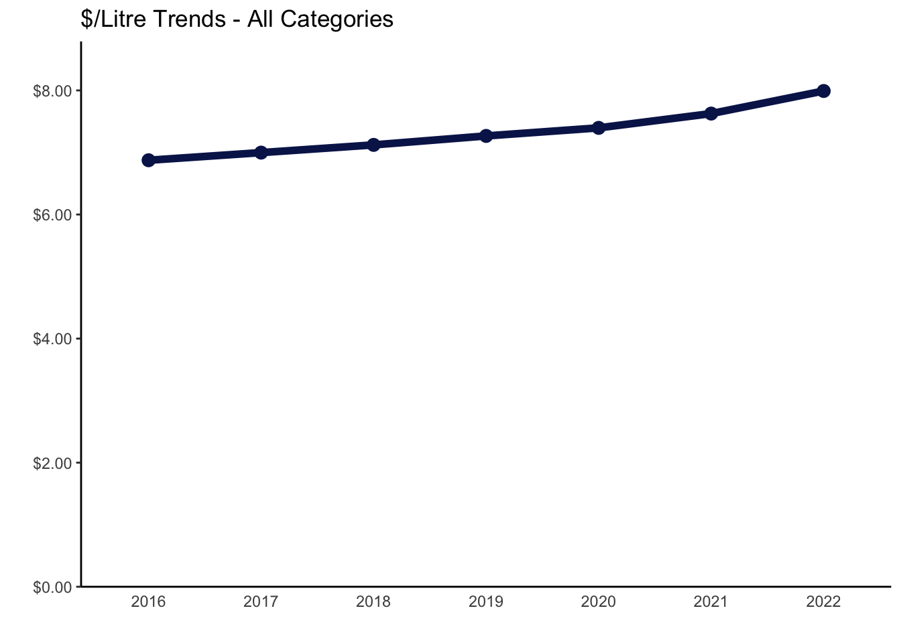

Exploration: BC LDB Liquor Market Review Data
Intro: What is this?
BC Liquor Distribution Board releases its ‘Liquor Market Review’ of market statistics on a quarterly basis. The reports are made available to the public through BC LDB website.
The reports are published in PDF format, providing data for the most recent quarter as well as previous four quarters, to allow for quarterly comparison back to same quarter of previous here.
Data here is extracted and compiled from reports going back to June 2015. This allows for more complete exploration and analysis of the data.
TREND OVERVIEW
Annual: All Categories
$ Sales
What are the annual trends in total sales in recent years?

Annual revenue for BC LDB has been steadily increasing.
What is YoY % change?

The biggest YoY change was 2020: pandemic time! Prior to 2020, annual increases were slowing down.
Volume (Litres)

Litre volume has remained relatively steady, with a peak during the 2020 pandemic. Volumes are slowing down, although 2022 still above 2019.
Biggest year-over-year jump of ~4% in 2020, with declines accelerating from 2021 to 2022.
$/Litre
With relatively flat litre volume sales, the increase in dollar volume is driven by increase in $ of revenue per litre.

Dollar per litre increases have been fairly steady, around 2%, until 2021. This corresponds with overall increase in inflation, accelerating through 2021 and 2022.
Annual: By Major Category
-- QUARTERLY OR CATEGORY?
-- probably category will be better
Quarterly
What are the quarterly trends in total sales in recent years?
`summarise()` has grouped output by 'fy_qtr'. You can override using the
`.groups` argument.What are the quarterly trends in volume sales in recent years?
What are trends in $/liter - all categories?
By Major Category
What are the quarterly trends by major category in recent years?

What are patterns in % breakdown by major category?
What is the quarterly % chg by major category?
What is the annual % chg by major category?
What is % change in YoY quarter by major category?
What are trends in $/liter by category?